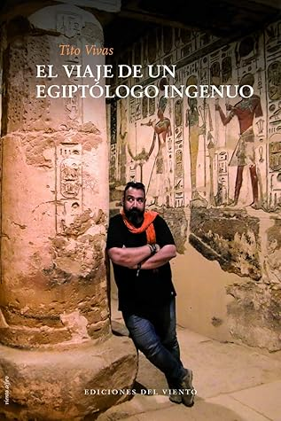

El viaje de un egiptólogo ingenuo
Reseña por Jorge I. Zuluaga

Ver reseña en GoodReads (necesita cuenta)
La literatura de viajes es uno de esos géneros de los que poco se lee actualmente. Tal vez sea porque ya pasaron aquellos tiempos en los que el mundo era casi nuevo para los humanos (bueno, para los "blanquitos privilegiados" de occidente que escriben libros de viajes). Pero es claro que el mundo no se ha agotado; que la posibilidad que ahora tenemos de estar en cualquier lugar del planeta en unas horas no ha hecho menos emocionante narrar lo vivido en un lugar relativamente desconocido o, como lo hace Tito en este libro, en uno muy conocido pero que esconde más secretos de los que abarcan las guías turísticas.
Es por eso que "El viaje de un egipólogo ingenuo" es único en medio de la abundante literatura de ficción y no ficción que abarrota hoy estanterías de librerías y bibliotecas.
Como entrada al mundo del Egipto Antiguo también es un libro único. Y es que Tito no se reduce a contar sus peripecias por el Egipto moderno mientras busca algunos de los lugares mágicos de lo que queda del Egipto farónico (lugares que conoce bastante bien). Tito también dedica muchas páginas a contarnos, de una manera bastante original, al menos desde mi perspectiva de lector curioso sobre Egipto, detalles sobre la Historia, la geografía, la religión y la sociedad del País de la Tierra Negra y la Tierra Roja.
Para quién sabe poco sobre Egipto, el libro es pues una amena y sintética introducción al tema. Para el o la entusiasta que sabe un poco más, la perspectiva diferente de los temas resulta refrescante y divertida.
Me gusta mucho el estilo desenfadado de su escritura, que mezcla muy hábilmente con un lenguaje elegante de buena calidad literaria (me ha sorprendido ver reflejado en él la cultura de Tito). Incluso para hablar de los temas más sesudos de la egiptología, Tito escoge hacerlo con términos muy coloquiales. Claro que, para nosotros los hispanoamericanos, la mayoría de los términos coloquiales que usa Tito son ajenos al uso cotidiano; aún así, y dado que la televisión y el cine nos han puesto en contacto con ese hablar popular español, el tono ayuda a hacer de un tema académico, algo más digerible.
Para mi ha sido un verdadero descubrimiento lo que he alcanzado a conocer, a través del relato de Tito, sobre el Egipto moderno. Su historia reciente y no tan reciente (algunos apartes se enmarcan en el Egipto de los 1800, cuando comenzó la verdadera exploración científica del Egipto Antiguo), su cultura, sus gentes, la vida en ciudades y en el "campo", los medios de transporte y la eterna relación de los egipcios y el turismo y los turistas.
Como decía al principio, no he viajado y no sé si viajaré a Egipto, pero leyendo "El viaje de un egiptólogo ingenuo" se me ha abierto el apetito por conocer al Egipto moderno también. Ese Egipto que no aparece en los miles de libros sobre las obras monumentales de los faraones. Y es que uno podría decir que conoce al Egipto antiguo a través de los libros; que no es estrictamente necesario visitar los restos del País de la antigüedad para hacerse a una idea, más o menos exhaustiva, de sus tesoros, de su gente (la del pasado), de su religión y manifestaciones artísticas. El exhaustivo trabajo que han realizado durante los últimos 150 años los egiptólogos, nos permiten (al menos en principio, aunque la empresa no sea tampoco fácil) al resto de los humanos contar con el lujo de conocer sin viajar.
Sin embargo, solo parece haber (o al menos es la impresión que me ha quedado del libro de Tito) una manera de conocer al Egipto moderno; al Egipto que no construye templos y pirámides. Para conocer ese otro país hay que viajar allá, hay que salirse de las filas para entrar a los monumentos, hay que bajarse de los buses con aire acondicionado, hay que comer en los lugares que no aparecen en las guías Michelin.
No me considero un asiduo viajero (es más, cuando he viajado lo he hecho como esos "guiris" que tanto critica Tito), pero, repito, este libro ha despertado suficientemente curiosidad en mi por conocer el Egipto moderno como para obligarme a pensar que si llego a ir espero contar con guías diferentes como Tito y sus amigos, para vivir mejor la experiencia de Egipto.
Este es, posiblemente, el único libro de no ficción, en el que he disfrutado tanto como el resto del libro, leyendo la bibliografía. La lista de textos que recomienda Tito y la manera como lo hacen provoca hambre bibliográfico. No dejen de leer ese último aparte.
La edición impresa que tuve la suerte de leer (Ediciones al viento, segunda edición) es sencillamente hermosa. Muy escasa, lamentablemente, por estos lares (Hispanoamérica); en esto debo agradecer a mi profesora de egiptología Elizabeth Noreña que me agrego a una lista de personas para que Tito nos enviará desde España un ejemplar. ¡Mejor imposible!
El papel es grueso y de buena calidad (lo que garantiza que envejecerá bien, ojalá tan bien como los mejores papiros Egipcios). Como buen libro de viajes no le pueden faltar las fotografías a todo color. En tiempos en los que son escasos los libros ilustrados, me alegra que hayan hecho una inversión en este sentido para este libro. La mayoría de estas fotografías son tomadas por el propio autor. Me encanto, por ejemplo, encontrar fotos de la gente, de los amigos que protagonizan el viaje de Tito. Personas relativamente anónimas que difícilmente ilustrarían un libro de egiptología, pero cuya imagen da un sentido distinto a las historias. Adicionalmente (y si no fuera ya mucho) el libro viene ilustrado por unas bellísimas acuarelas del mismo Tito ¡hágame el favor!. Otro punto para el hombre.
En fin ¡que viaje! Que buena guía a Egipto es este libro y que bien lo ha escrito Tito.
P.D. Tito no tiene nada de ingenuo (el título viene de una frase pronunciada al vuelo en uno de los apartes del libro), pero si es muy ingenioso para sacarle provecho a sus diarios. ¡Espero leerle muchos más!